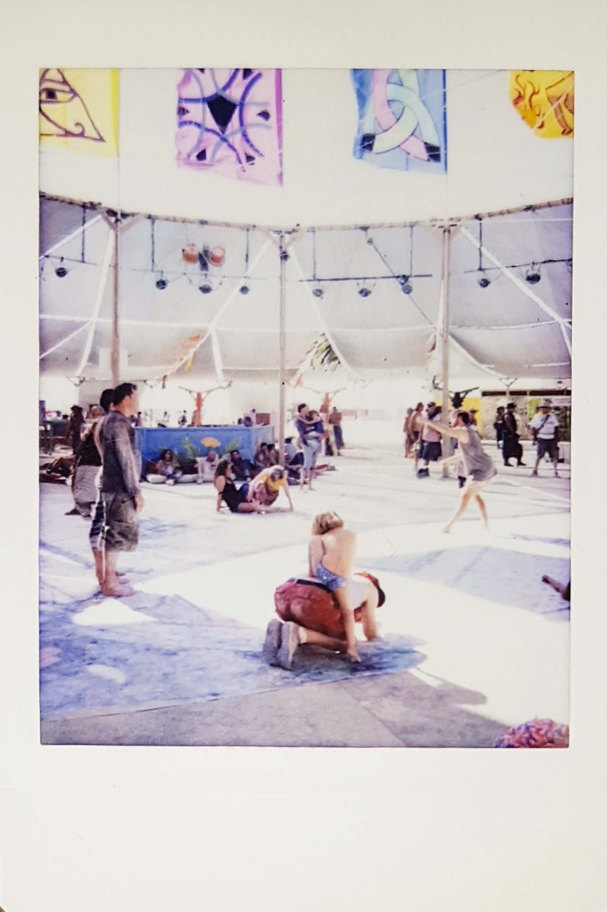
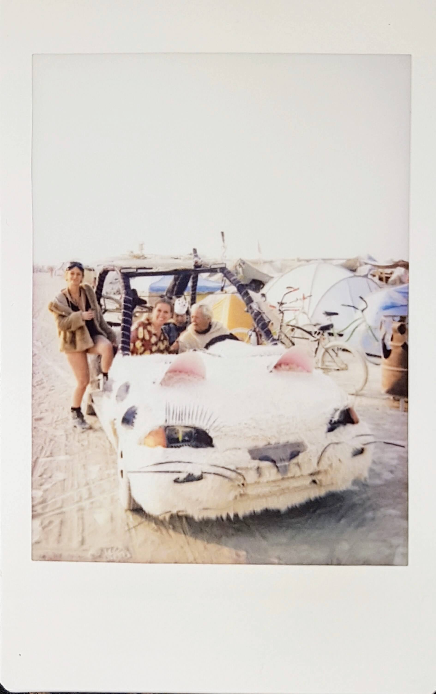
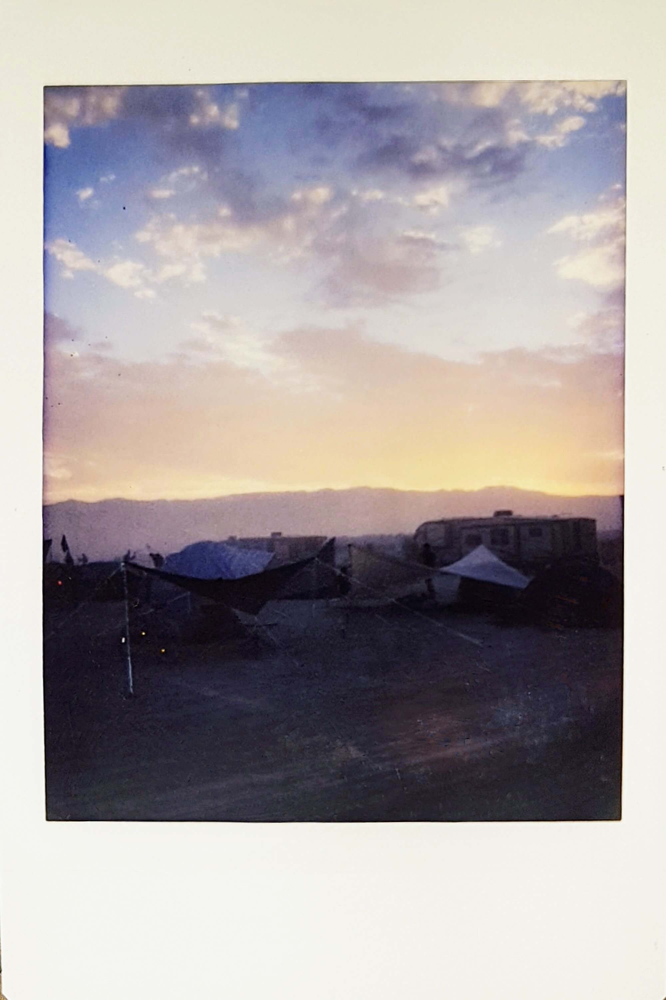

Hi, my name is Damien.
I first went to Burning Man in 2017. It was the most beautiful week of my life. The experience was so intense that I felt the need, while in the desert, to write my impressions and sensations down every day. When I decided to publish an article about my Burn, it felt natural to use these notes.
I only made 3 smalls kind of changes to my notes while trying to keep. their original spirit as much as possible:
This post is illustrated as much as possible with my Polaroid pictures. I brought a lot of them to give to people but still managed to keep some for me. They are the most instantaneous memories I have. My camera was really bad for night pictures so I don't have any.
I hope this article will give you a glimpse of what Burning Man is and that I will see you there next year. It is amazing! Welcome home, my friends!
Pauline and I got our tickets! We had to collect them at Will Call before the bus. I was still a bit worried about this so I feel better now. Begins a long and quiet bus ride. People look cool but few talk to each other. We meet Niklas (Sweden). I also finish to read my book so my mind is free. We spend 7 hours on the bus but the journey seems fast. The landscape is so wild and pure. However, you can still see human touch everywhere (fences, etc.). When we get closer to Black Rock City, every town sells Burning Man gears (costumes, bikes, etc.).
As we took the Burner Express, we skip the entrance line and save many hours. The desert is wonderful. Its beauty is astonishing and you can already feel great vibes. We set up our tents and meet our first friends. Renaud, Denis, and Laurie are from Belgium. We also invite Niklas to join us in our part of Hoverlandia (the camp for people who took the Burner Express). We are in 6:00 and I.
I thought I would not be hungry in the desert, I actually am. By night, I leave our camp with Pauline to explore the Playa. Most camps already seem open (they usually open later in the week). We see amazing art pieces. Not only beautiful but also thoughtful. For example, we discover a bear statue made of pennies. Is it a symbol of the monetization of our childhood?
Great surprise, there are some community bikes available in Black Rock City. Called Yellow Bikes, they are green. The only condition to use them: let them for someone else when we stop somewhere. We see a lot of bars and stop at some to get drinks. Most of them have a great theme (ex: Alibabar) and people are friendly. By night, the Playa seems to come from a fairytale, with lights and surprises everywhere. I am so happy not to have my phone. I can disconnect and enjoy the instant. I meet a lot of people and take a lot of Polaroid pictures. Everybody loves them as it gives instant memories. It was a great idea! Surprisingly, few people wear a costume. I guess we only see the most beautiful ones in the pictures.
The night is quite hot and I can stay bare-chested. I feel great. So far, I love the burn, the people, the beauty and hostility of the environment and the surprises and discoveries every moment brings. We stop at some kind of "trampoline tree bar" to enjoy the music and meet again our friends from Belgium. This bar is a lot of fun.
My friends decide to go to sleep but I don't want to. I go on with the discovery of the Playa alone to see more art pieces. Among others, I discover a huge tree full of light leaves that change colors and some massive piece of rocks that you can climb and swing above a fire.
I finish the night quite late and a bit drunk in a cool bar in the far west of Black Rock city. While leaving, I forget my bag with most of my stuff inside… It takes me 1 hour to come back to our camp. Black Rock City is huge.
I wake up at 7 am to look for my bag. I take a community bike and find the bar where I finished yesterday night quite easily (I don't know how). My bag is still here, on the ground. Relief!
Back to the camp, Pauline and I decide to go the Center Camp to chill a bit. Meeting people seems so easy here. In the center of the camp, a group of people is dancing. They are beautiful. After a few minutes, one of them invites me to join. He teaches me the basics of what is called Contact Improv'. Always keep a contact with the other person, play with your weights and with your center of gravity. You can easily understand the energy of your partner and what he tries to tell you. It is an amazing feeling. I want to do it again.
We leave Center Camp and try to volunteer. Apparently, a camp called Playapologies needs some help. They write apologies for you and deliver them to the right person. We could do the delivery. Unfortunately, it is a bit early. They are great people and give us a virgin gift. I receive 2 necklaces, each with a key: one for me and one to give to somebody meaningful I meet. We will try to come back later.
Dust is everywhere. My hair is gray, my shoes feel like cardboard and my legs are covered. My temporary tattoos were bad ideas.
On our way back, we find hammocks and get some rest. We meet 2 new friends there. They give me a playa name. It will be Keys (because of the necklace). I kind of like it. It is amazing how easy it is to meet people and how great the conversations can be with complete strangers. And people are not mad if you leave for other adventures. They live the moment. And the moment is often great.
Back to our camp, I join Niklas to look for lemonade. There is a camp which gives some and I need something cold. We don't find lemonade but we find vodka + cranberries (better) in a camp called "Fruit and Nuts". Again, people are great and we have a lot of fun!
We try to find a yoga class but the camp is closed. We walk a bit and find an unbirthday party in a camp. Great atmosphere. Opportunities are everywhere. We meet a guy called James here and we go together to an amazing meditation class (one of the best in my life). Back to our camp, we chill a bit. So many things happening in so little time and we need some rest.
Pauline, Niklas and I leave during the evening and go to a camp where they play Blue Grass (an American music). It is funny but too calm. I needed something more energetic. We also get some Maple Taffy.
We explore the esplanade and lose Niklas in a pink Camp. After few drinks in Alibabar, we find an impressive egg-shaped camp with great music. There is a big net at the top (at least 10 meters high) that you can climb to see the whole Playa. It is amazing. The music is great! We dance like crazy, with everybody. I dance with a wonderful lesbian girl. Nobody judges, nobody cares, it feels so great! I also meet Daniel who gives me some crazy psychedelic glasses. You wear them and all the lights are distorted. It is fucking impressive. I love them. I am happy!
I am tired. I got some amazing pancakes in a camp nearby and feel a bit better but I need some rest. This morning, Niklas sang at Center Camp during an open mic. It was funny. His songs only talk about girls!
I tried to go to a camp where you could give and receive massage. I wanted to relax a bit but it was closed. So I tried contact improv again by taking a class. We were around 20, all ages and genders. We did most of our exercises eyes closed. I was surprised to feel so comfortable. I was able to let everything go and express myself. I have no idea how I looked. I don't care actually.
I join Pauline at an Arabic theme camp close to our tents. People are beautiful there. All the girls are supermodels. There are impressive cars (Mad Max style) parked in front of the place. Funny enough, I don't have as much fun as in other places. People seem less accessible. Everything is a bit less spontaneous. We plan to leave but are blocked but the most impressive sand storm I have ever seen. Winds are really strong and, for 15 minutes, we cannot see 5 meters ahead. I stay outside of the camp to feel its power. It is crazy! When it stops, my hair is totally blond because of the dust.
Back to our tents, we meet Gizem, a Turkish girl who lives in New York. She has just joined our part of the camp. She is great!
We decide to go the east of the Esplanade tonight to explore a new part of Black Rock City. We quickly find a great bar. We meet a really nice guy called Chucky. He explains to us that this camp is built by circus artists, climbers, and acrobats. They have pogo sticks and fire shows and a huge swing (at least 15 meters high) that you can climb. Of course, I climb it (I am a child)! There is no security but nobody cares. We all help each other here. But everybody is responsible for the risks he or she takes. Again, the view is amazing. I stay there for a while, watching the sunset.
Back to earth, we meet again a lot of people. One of them works for Le Cirque du Soleil. She is nice, interesting and beautiful. She tells us to hurry up because the fights will begin inside Thunderdome. Thunderdome is a crazy Mad Mad style dome where people fight while the crowd yells at them. It is a crazy show. I climb to the top of the dome and wait for the fights to begin. This place is mad. People (me included) become animals for a few minutes. It is a great outlet for all the wildness you keep inside and cannot express in "default world". We stay here for few fights.
The first thing we find after this: a melted marshmallows distribution. In 2 minutes, we went from complete wildness to complete sweetness. I guess this is Burning Man. I cannot complain, the marshmallows are great. We find some music and dance a bit. We quickly realize that we don't want the same thing tonight. I want to explore Black Rock City and Pauline wants to dance. We leave each other. Nobody is mad, all the contrary. We are happy for this great night together so far but also to be able to follow our own paths. I love this feeling! Thank you, Pauline.
I discovered a lot of cool camps. I found a huge Boeing (yep, really) in which you can leave notes about you current feelings, some cool parties and a grilled cheese distribution. So much variety in what you live here. I also got the most unexpected and beautiful hug of my life. Hugging people is usual in Black Rock City. And it feels great! We should do it more in "default world". But some mean more than others. While leaving a camp, my eyes met some guy eyes. We both understood something and the next second we were giving each other a hug. Nothing sexual at all (I am heterosexual), just a hug. But a powerful, long and meaningful one. At the end, we looked at each other with a smile, thanked each other and walked our ways. It was deeply beautiful.
I was hungry this morning. I took 3 breakfasts. We also have 2 new friends in our camp: Toru is from Japan and Marijn from the Netherlands. They already know each other. They tried to install a shaded area above all our tents but it failed.
I felt dirty so I went to a camp to clean my foot. As most of the things in Black Rock City, when you receive, you are encouraged to give. It feels great. However, I don't feel as spontaneous as the days before. Tiredness maybe. When I go back, the shaded area is ready! These guys rock! It is really cool!! We spend some time to enjoy it.
After a few hours of rest, I join Marijn at a Shibari class (Japanese bondage). The others could not make it. It is surprisingly a lot less sexually charged than what I imagined. Girls keep their clothes on and there is a lot of respect. It is body art. After this, Marijn invites me to a foam party where an artist she likes is supposed to paint. I don't know where I am going but well, it is Burning Man, so I follow. We wait in line at a non-binary camp and we enter a room with several hundred people, men and women, naked. Whaou, I was not exactly expecting that. Now that we are here, we get naked and climb some stairs to get our foam shower. It feels great! And the atmosphere is impressive too. Again, there is a ton of respect and kindness in the air. It is an amazing experience.
I come back to the camp alone. On my way, I find a bar. Well, not really. The barman keeps yelling at everybody "We are not a bar, don't stop if you want a drink". I stop and begin to play his game. So no, I definitely don't want a drink, I don't have my ID and my cup and actually, I don't even drink alcohol. He gives me a drink and we have a lot of fun talking!
I join Pauline at the camp. We decide to join Marijn again to watch a Shibari performance in the middle of the Playa. It is close to a net structure that you can climb. Again, amazing view and sunset from there. I will never have enough. The show is quite beautiful but disturbing. The traditional Japanese music is amazing. But the performance is a bit brutal and shows women as victims. I don't like this. Not my thing. I felt much more respect during the class.
While coming back to sleep, we stop by the Temple and the Man. In the Temple, there are a lot of pictures and notes for deceased people. It is a powerful and peaceful place. The Man is beautiful too. The theme this year is Radical Ritual so he is inside his own temple. We get some hot dogs on our way back and chill a bit at our camp before sleeping.
I woke up early this morning. I wanted to see the sunrise. And it was worthy! Crazy beautiful. The sky was red.
Around 8 am, we had a wonderful surprise. Marijn came back from a sleepless night and she was not alone. She was with Captain Bill (a crazy American veteran) and his cat car. We all jumped in the car and Bill drove us to his camp. It was so fun! We were screaming "Miaou" to everybody! And guess who I found again at Bill's camp?! James!! The amazing guy I met at the unbirthday party on Monday. Serendipity, I love you!
I let James, Bill, and the others at their camp. Today, I have a goal. I want to run the 5k in the Playa. Until yesterday, I did not know there were races in Black Rock City. There is even a 50k ultramarathon. I love the idea! I want to do it next year! I walk to the camp where the starting line is and realize that I am too late. The race was 1 hour before… Tomorrow there is a beer mile. I will do it. I come back to Bill's camp and get a breakfast on my way to forget my disappointment.
The atmosphere at the camp is great! I receive a Black Rock stone to add to my necklace and talk a lot with James. James also gives me what he calls a "first aid bondage". He claims to feel the energies in people and tries to calm the bad ones. I did not feel much but it was nice to try it with somebody I trust.
We decide to go all together to a yoga class close by. I am not flexible at all so yoga is painful for me. But this one is supposed to be "for all bodies" so I should be fine. 1 hour later, I am nothing but pain. I guess "all bodies" was a bit optimistic! We go back to our own camp with the cat car. A lot of fun again.
A calm afternoon for me. I chill at the camp (was needed) when the others drive across Black Rock City with the cat car. When they come back, they are with Christian, a new Swedish friend they met at the foot washing camp. I join them to go to Bill's camp. After a few hundred meters, I check if I have my passport but cannot find it. I jump off the car to go back to our tents and look for it. 10 seconds later, I realize that I have it. Too late. I have to walk until Bill's camp. It is getting more and more difficult to find community bikes as people lock them. This is not Burning Man spirit! On my way, I find hot dogs and ice cream. Needed! Serendipity again! This is one of the things I love the most about Burning Man.
When I arrive, James is doing "first aid bandage" with Toru and Christian. I do some stretching and we talk a bit. Pauline, Christian and I finally decide to go to the Billion Bunny March. We join hundreds of people in a bar, give our humanity up in exchange of bunny ears and get some carrot drinks. We then begin the March. We dance, we jump, we protest for bunny rights and carrots. I cannot stop laughing. We finally reach the Man. Carrots, wolves, and cats are waiting for us and try to steal our ears. We run as fast as we can! But we make it to the Man! It was so much fun!
We decide to go back to the camp where we met Chucky on Tuesday. We try the huge swing, enjoy the sunset and have great talks with Christian. Cool guy! He is a skydiving instructor and lives in his car in California. It gives some inspiration. We leave and stop by a camp for deaf people. Amazing experience. Of course, we could not communicate with words. But we could communicate much more with emotions than in the "default world". It is impressive what you can do when you feel free. I want to learn sign language. I have some much to learn from differences.
Christian brings us to a skydiving camps where he has a lot of friends. There is a party going on. The music is good but, same as in the Arabic camp, people seem less accessible. Pauline wants to stay but I decide to leave. I also need some rest. On my way back, I find a beautiful fire show and enjoy an amazing midnight poutine (a recipe from Quebec). It is time to go to sleep.
This morning was perfect! The 9 of us (Pauline, Toru, Marijn, Renaud, Denis, Laurie, Niklas, Gizem and me) spent time together at the camp. The atmosphere was really cool. We shared great talks and amazing moments. Above all, we laughed a lot! I love our group! We complete each other so well!
Everybody wants to go to a bondage show. I already did a class so I am not really interested. But I follow so we can stay together. Pauline tries it. It is still not sexual at all, only artistic.
Today, I have a goal. I want to run the beer mile (1 mile with 1 beer can to drink every 400 meters). I found some beer at the camp (burners gifting economy ❤). I motivate everybody to come to encourage me. First beer, first 400 meters. So far, so good, I am among the firsts. Second beer, second 400 meters. Whaou, this beer is hot, and I am feeling heavier. Third beer… I almost vomit… I decide to stop. Big fail! To remember: in a beer mile, the hard part is not the mile, it is the beers.
I sweat and I feel dirty. Pauline convince me to go to PolyParadise camp where you can get some kind of shower. It is called the Human Carcass Wash. Again, we don't know where we are going. But we are going. And again, what a surprise when we arrive. The concept: you wash strangers and get washed by them. This pushes my boundaries really far. But there is a lot of kindness here. And it is Burning Man. So we get naked. We meet nice people while waiting in the line (most unexpected place).
When it is our turn, a volunteer explains to us how it works. You begin by washing others, all kind of people and bodies (fat and skinny, man and girl, young and old). Then, it is your turn to get washed. At the beginning of every stop, you are invited to communicate your boundaries to the people who will wash you. The experience is actually not presented as a shower but as a communication exercise. And it definitely is. At the beginning, I gave clear boundaries. But I quickly began to trust people more and stopped giving indications. And again, everybody is careful and obliging. It never feels weird. And it is great to let it go. At the end, your body is clean but your mind is even cleaner. Fewer fears, fewer misleading preconceptions, more trust. This is probably my strongest experience so far. I am really proud of myself for daring.
It is almost night time. We join our camp mates in a Jewish camp to celebrate Shabbat. I am not religious at all but I am open to spirituality. I love the atmosphere. The songs are beautiful. People sound open minded. At the end of the ceremony, we enjoy together a wonderful meal. I share again great moments with my friends. We begin to have a great connection.
I decide to discover the art pieces one more time with Pauline and Niklas. We love the rowing skeleton. We go to the end of the Playa and find the fences that delimit Black Rock City. I finally decide to leave the group and finish the night alone. I chill a bit close to a big fire and look at the stars. I come back early to the camp. Tomorrow is my last day and I want to get the most out of it!Today I went to the Playa Pops Symphony with Pauline. It was supposed to be at Center Camp. The location changed and it was actually quite far. It was the best musical experience of my life. Playa Pops is a group of 80 musicians who create an orchestra every year at Black Rock City. Some of them are professional musicians, others are amateurs. The diversity in term of age and level is huge. But what an energy! Of course, they played Beethoven and Mozart. But they also played movie (2001: A Space Odyssey) and popular music (even Happy Birthday). We even got took part of the concert with a kazoo. And it was beautiful! The whole concert was perfectly imperfect!
The afternoon was much quieter. One week is long. Our bodies are getting tired. We found some champagne at a camp. Well, Californian champagne so not really champagne. I also went to a camp where you can send a postcard to your future self. I will receive it in a few months. I hope it will help me keep the same spirit in "default world". Pauline and I leave tomorrow so we begin to pack our stuff and enjoy some our last hours with our friends.
Around 8 pm, we join a march from our camp to go to the Man. It will burn at 9 pm. The atmosphere is great. The wait is a bit long but it is worth it. The fire is massive! I am impressed. I thought it would be a bit more emotional but you cannot control these things.
After the Burn, everybody wants to dance. We stop in front of an art car and have a ton of fun together. The energy is great! After a few hours, some of us decide to come back to the city. I stay in the Playa with Pauline, Renaud, and Gizem. We are a bit drunk. We let ourselves go and dance in several camps for our last night together. We even go rollerblading! I fall but I feel great! Around 3 am, we finally go to bed.
Last day! Sad day! This morning, we finished to pack our stuff and said goodbye to everybody. I will miss them. But we are already planning to meet next year! I want to go back!
We were quite well organized this year! The only thing to improve: clarifying what can be recycled in the US and what cannot. I had to sort everything by hand before leaving! And I want to give more to people! We will find a way even if we live far.
We take the Burner Express back to San Francisco. Everybody is sleeping. When we arrive, I need 3 showers to remove the dust from my body.
Thank you, Burning Man! See you next year. I will do my best to keep the principles alive!